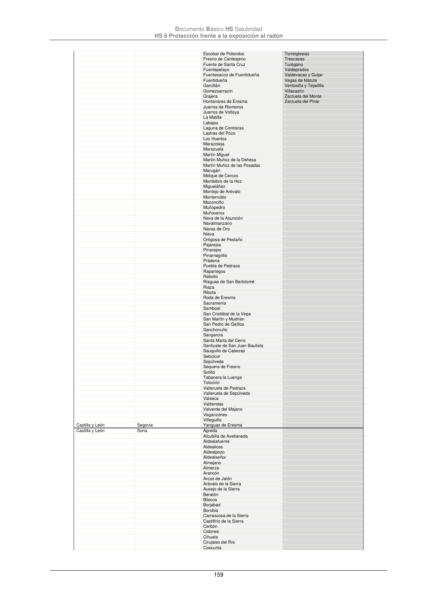

DB-HS Salubridad · edición 2022-06-14 · capa oficial
Documento DB-HS-oficial · SHA-256 del PDF 68df3caacc95f71aee2ec1ba7b2c65ae66155c21e3a8785521b8fdd4fd640d3b
Página física 159 de 184.
Copia fiel del PDF fuente · Fuente oficial
Ficha de la disposición en la fuente oficial
Formato: Texto de la página (Markdown)
Documento Básico HS Salubridad HS 6 Protección frente a la exposición al radón 159 Escobar de Polendos Torreiglesias Fresno de Cantespino Trescasas Fuente de Santa Cruz Turégano Fuentepelayo Valdeprados Fuentesaúco de Fuentidueña Valdevacas y Guijar Fuentidueña Vegas de Matute Garcillán Ventosilla y Tejadilla Gomezserracín Villacastín Grajera Zarzuela del Monte Hontanares de Eresma Zarzuela del Pinar Juarros de Riomoros Juarros de Voltoya La Matilla Labajos Laguna de Contreras Lastras del Pozo Los Huertos Marazoleja Marazuela Martín Miguel Martín Muñoz de la Dehesa Martín Muñoz de las Posadas Marugán Melque de Cercos Membibre de la Hoz Migueláñez Montejo de Arévalo Monterrubio Mozoncillo Muñopedro Muñoveros Nava de la Asunción Navalmanzano Navas de Oro Nieva Ortigosa de Pestaño Pajarejos Pinarejos Pinarnegrillo Prádena Puebla de Pedraza Rapariegos Rebollo Riaguas de San Bartolomé Riaza Ribota Roda de Eresma Sacramenia Samboal San Cristóbal de la Vega San Martín y Mudrián San Pedro de Gaíllos Sanchonuño Sangarcía Santa Marta del Cerro Santiuste de San Juan Bautista Sauquillo de Cabezas Sebúlcor Sepúlveda Sequera de Fresno Sotillo Tabanera la Luenga Tolocirio Valleruela de Pedraza Valleruela de Sepúlveda Valseca Valtiendas Valverde del Majano Veganzones Villeguillo Castilla y León Segovia Yanguas de Eresma Castilla y León Soria Ágreda Alcubilla de Avellaneda Aldealafuente Aldealices Aldealpozo Aldealseñor Almajano Almarza Arancón Arcos de Jalón Arévalo de la Sierra Ausejo de la Sierra Beratón Bliecos Borjabad Borobia Carrascosa de la Sierra Castilfrío de la Sierra Cerbón Cidones Cihuela Cirujales del Río Coscurita

Datos candidatos: compruebe celdas y notas en el PDF.